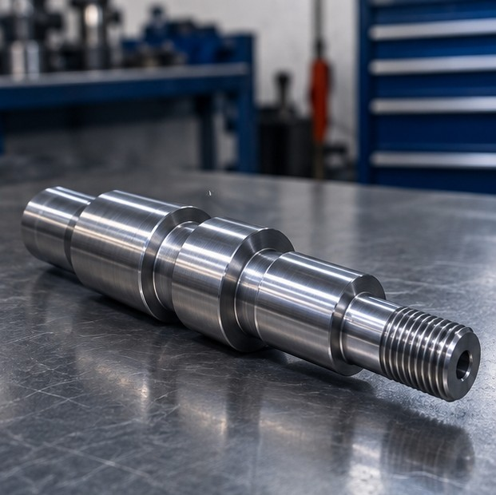
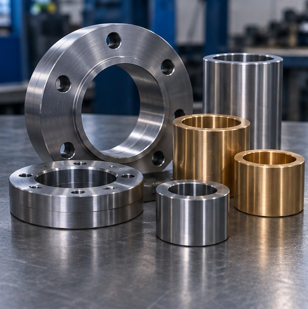
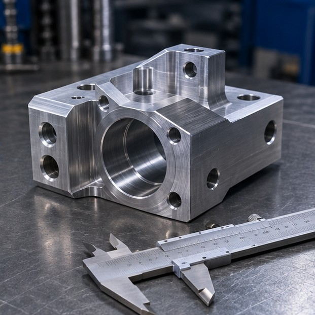

Torneamento
Eixos, buchas, pinos, flanges, espaçadores, roldanas e componentes cilíndricos produzidos conforme medidas e necessidade.
Peças torneadas e usinadas com atenção aos detalhes, conforme a necessidade do seu projeto.
Atendimento para fabricação, recuperação e adaptação de peças. Avaliamos seu desenho, medidas ou peça de referência para entender o serviço e orientar o orçamento.
Eixos, buchas, pinos, flanges, espaçadores, roldanas e componentes cilíndricos produzidos conforme medidas e necessidade.
Produção de peças conforme desenho técnico, croqui, medidas informadas ou uma peça de referência para avaliação.
Reposição de componentes, ajustes, roscas, furações e soluções para manutenção de máquinas e equipamentos.
Veja de perto alguns exemplos de peças, fabricação e serviços da JDS. Cada projeto é desenvolvido de acordo com as medidas e a necessidade do cliente.

JDS 01Fabricação sob medida
Peças usinadas

JDS 03Reposição e manutenção

JDS 04Conforme desenho ou amostra
Veja como funciona o atendimento: você envia as informações, a JDS avalia o pedido e combina os detalhes antes de iniciar o serviço.
Conte o que precisa, informe medidas e mande uma foto, desenho ou peça de referência, se tiver.
A JDS avalia o pedido e conversa com você sobre valores, prazo e detalhes do serviço.
Com o orçamento aprovado, o serviço é realizado conforme o combinado e as especificações alinhadas.
Combine a retirada ou consulte a possibilidade de entrega da peça até você, conforme local e serviço.
Se possível, envie as medidas da peça, o material, a quantidade e uma foto ou desenho técnico. Quanto mais detalhes você compartilhar, melhor será a avaliação do serviço.

A JDS Tornearia é feita por quem acompanha de perto cada serviço.
O responsável pela JDS entende a necessidade do cliente, avalia as medidas ou o desenho da peça e acompanha o trabalho com atenção. Aqui, o contato é direto para alinhar detalhes, tirar dúvidas e buscar a solução adequada para cada pedido.
Conte o que você precisa e, se tiver, envie uma foto ou o desenho técnico da peça. A JDS recebe sua solicitação pelo WhatsApp.
Explique o serviço e as medidas.
Anexe uma foto ou PDF, se tiver.
Envie seu pedido pelo WhatsApp.